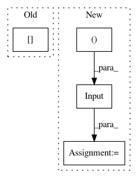

9c868282d2a38912259e78cd5a364a662f9c780e,tests/preprocessing/test_object_detection.py,TestDebugObjectDetectionGenerator,test_flow,#TestDebugObjectDetectionGenerator#,23
Before Change
generator = generator.flow(training, classes)
generator = keras_rcnn.preprocessing.ObjectDetectionGenerator()
generator = generator.flow([training[1]], classes, target_shape=(1200, 1600), scale=1, ox=0, oy=0)
After Change
class TestDebugObjectDetectionGenerator:
def test_flow(self):
image = keras.layers.Input((448, 448, 3))
training_options = {
"anchor_target": {
"allowed_border": 0,
"clobber_positives": False,
In pattern: SUPERPATTERN
Frequency: 4
Non-data size: 4
Instances
Project Name: broadinstitute/keras-rcnn
Commit Name: 9c868282d2a38912259e78cd5a364a662f9c780e
Time: 2017-10-26
Author: jyhung@broadinstitute.org
File Name: tests/preprocessing/test_object_detection.py
Class Name: TestDebugObjectDetectionGenerator
Method Name: test_flow
Project Name: instacart/lore
Commit Name: 644f6485707aaf7d670216f7ea0885b7a0bc8a26
Time: 2017-12-08
Author: montanalow@users.noreply.github.com
File Name: lore/estimators/keras.py
Class Name: Keras
Method Name: build_inputs
Project Name: keras-team/keras
Commit Name: 1d2ad790dd43a2d702176c1170b2f3fd592a385a
Time: 2018-01-30
Author: myutwo150@users.noreply.github.com
File Name: tests/keras/layers/wrappers_test.py
Class Name:
Method Name: test_Bidirectional_state_reuse
Project Name: tensorflow/models
Commit Name: 802488f1dc363b326437dd05341b8310cfe786c3
Time: 2020-06-15
Author: hongkuny@google.com
File Name: official/nlp/modeling/models/bert_pretrainer.py
Class Name: BertPretrainerV2
Method Name: __init__